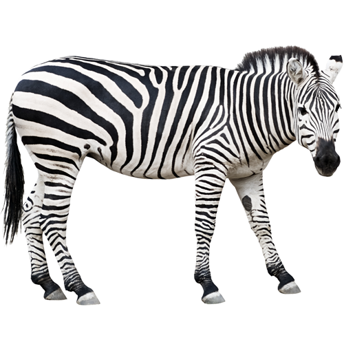

Zebra

Zebras (subgenus Hippotigris) are African equines with distinctive black-and-white striped coats. There are three living species: the Grévy's zebra (Equus grevyi), plains zebra (E. quagga), and the mountain zebra (E. zebra). Zebras share the genus Equus with horses and asses, the three groups being the only living members of the family Equidae. Zebra stripes come in different patterns, unique to each individual. Several theories have been proposed for the function of these stripes, with most evidence supporting them as a deterrent for biting flies. Zebras inhabit eastern and southern Africa and can be found in a variety of habitats such as savannahs, grasslands, woodlands, shrublands, and mountainous areas.